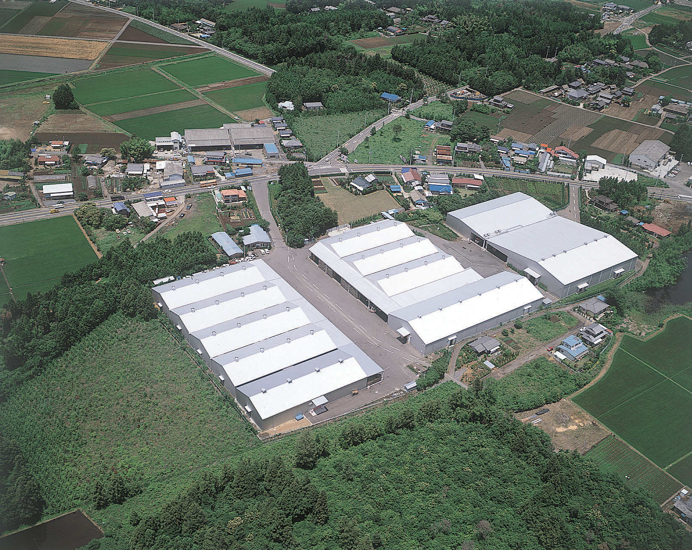
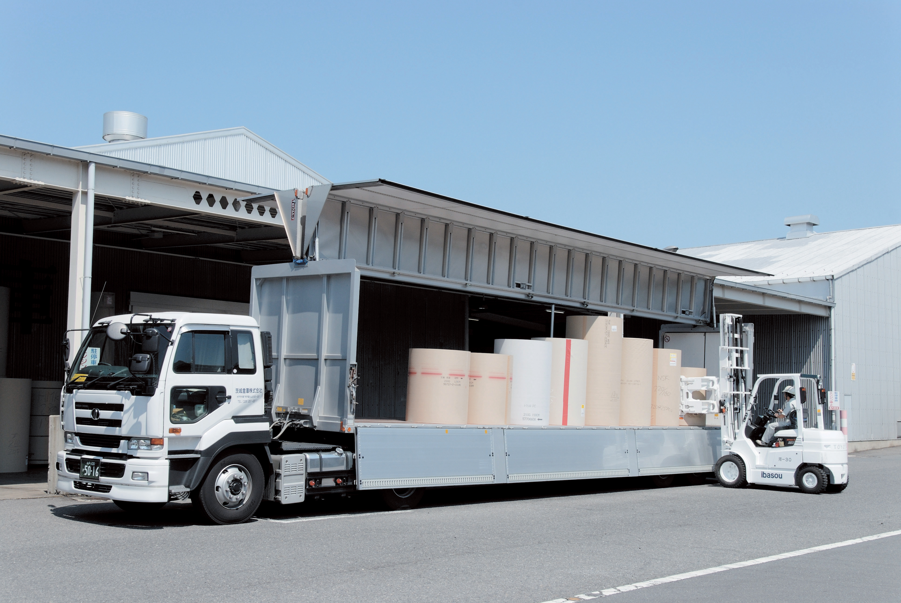

施設の概要
敷地 33,682.44㎡
倉庫延床面積 13,566.04㎡
普通倉庫 8,395.20㎡
低温倉庫 3,925.08㎡
定温定湿倉庫 1,245.76㎡
フレキシブルな対応
敷地は広大なヤードを有し多数のトラックを同時に取り卸しが可能です。ジャストタイムでの納品も好評を得ています。近年、共同保管、共同配送等も取り入れ、その機能は、お客様に安心、安全な物流サービスを提供しています。
優れた荷役技術と保管技術
低温倉庫、定温定湿倉庫を駆使した温湿度管理をしています。
特に「米」を中心とした穀物、食品の保管は、長い歴史の中で学んだ豊かな経験と実績を生かし、多くの社会的信頼を受けています。

交通アクセス
茨城県の県庁所在地、水戸市の西部に位置する。
一般の国道
国道50号線に隣接し、県道30号線（岩間街道）に面している。
高速道路
常磐自動車道水戸インターより河和田営業所まで15分。